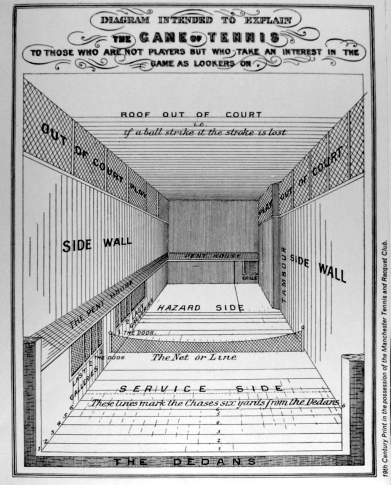

The History of Tennis

Early Origins
Historians believe the roots of tennis can be traced to France in the 11th and 12th centuries, when monks played handball against monastery walls or over a rope strung across a courtyard. This early game was known as jeu de paume, or “game of the hand.” As it gained popularity players began wearing gloves to protect their hands, then adopted wooden bats, and eventually developed balls made of hair, wool or cork wrapped in cloth or leather.
Royal Tennis & Real Tennis
By the 14th century the sport had captured the interest of European royalty. French kings were avid players, and some even met their end after strenuous games. Rackets appeared in the 16th century and England’s Henry VIII built a lavish court at Hampton Court Palace. A variant of the game known as “real tennis” is still played today in four countries. On these indoor courts players can bounce the ball off walls and sloping surfaces.
Lawn Tennis
Modern lawn tennis emerged in Britain during the 18th century when aristocrats began hosting matches in their back gardens. The sport quickly eclipsed croquet and spread internationally. The All England Club organized the first Wimbledon Championships in 1877, and within decades national tournaments were established across Europe and the United States. Equipment kits featuring net posts, rackets and rubber balls helped standardize the game and make it portable.
Tennis Today
Today tennis is a global sport played on clay, grass, and hard courts. Major events like the Australian Open, Roland Garros, Wimbledon and the US Open attract players and fans from around the world. The International Lawn Tennis Federation—now simply the ITF—was founded in 1913 to coordinate rules and competitions between national associations. Whether you play for fun or aspire to compete, tennis offers endless opportunities for growth and enjoyment.